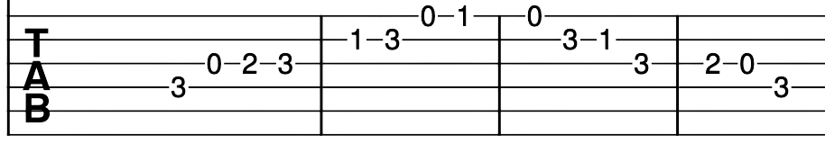
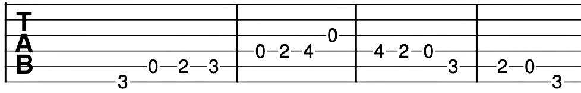
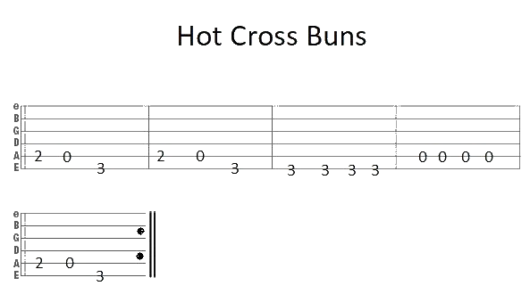
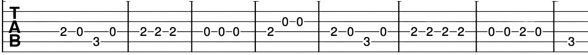
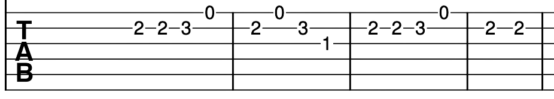
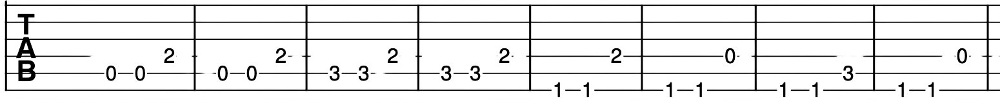
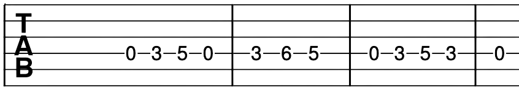
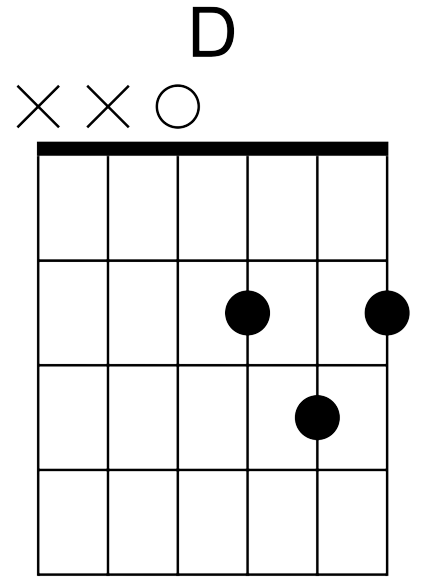
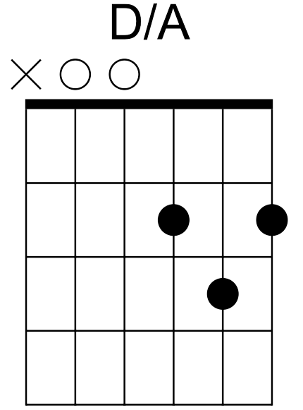

Before getting stuck into the meat of today's lesson, try the familiar scales and arpeggios we have played before. See the tabs posted below for reference.
C Major Scale

A Major Scale

D Major Scale

E Major Scale

C Major Arpeggio

Below are two new scales: these are F and G major. You should notice the same patterns from the above scales albeit shifted up/down a few notes.
F Major Scale

G Major Scale

Let's try our songs from previous lessons before moving onto something new. Get used to the finger movements before adding in speed. It's always easier to play nursery rhymes as these are simple tunes. Try look for songs you like and learn the intro of the song. If you like a song, you already know how it should sound. This allows you to immediately self-correct if you play a note that's one fret too high or low.

Mary had a Little Lamb

Yankee Doodle

Don't Stop Believin'



Play a D major chord. You should be used to your index, middle and ring fingers on the second and third
frets of the three highest pitched strings. The notes you're playing are D, F# and A. As you begin playing
on the D string, the bass note is D. But what if we played a different arrangement of chords? We could
rearrange the notes so F# is the lowest note or so that A is the new bass note. These chords are written
as D/F# or D/A respectively. This means that you make the D chord shape and the note after the slash is
the new bass note. I will post a diagram of a standard D major chord, D/A and D/F# below.
To play D/A, place your index, middle and ring fingers on the guitar as normal to play a D chord. When
playing a D chord, you usually begin strumming from the fourth string (D). However, a D/A requires an
A as the lowest note in chord. The fifth string on the guitar is the A string. This means that you begin
strumming from the fifth string instead of the fourth string. Do not play the lowest string when playing
this chord. Congratulations, you have now played a D/A chord.
To play a D/F# chord, begin again with holding a regular D major chord. Now remove the finger from the
first string (thinnest/highest pitched string). You should now only be holding down the second fret of
the G string and the third fret of the B string. Move the index finger to the second fret of the thickest
string. This is an F# you're holding down. Now strum all six strings. This is a D/F# chord.

